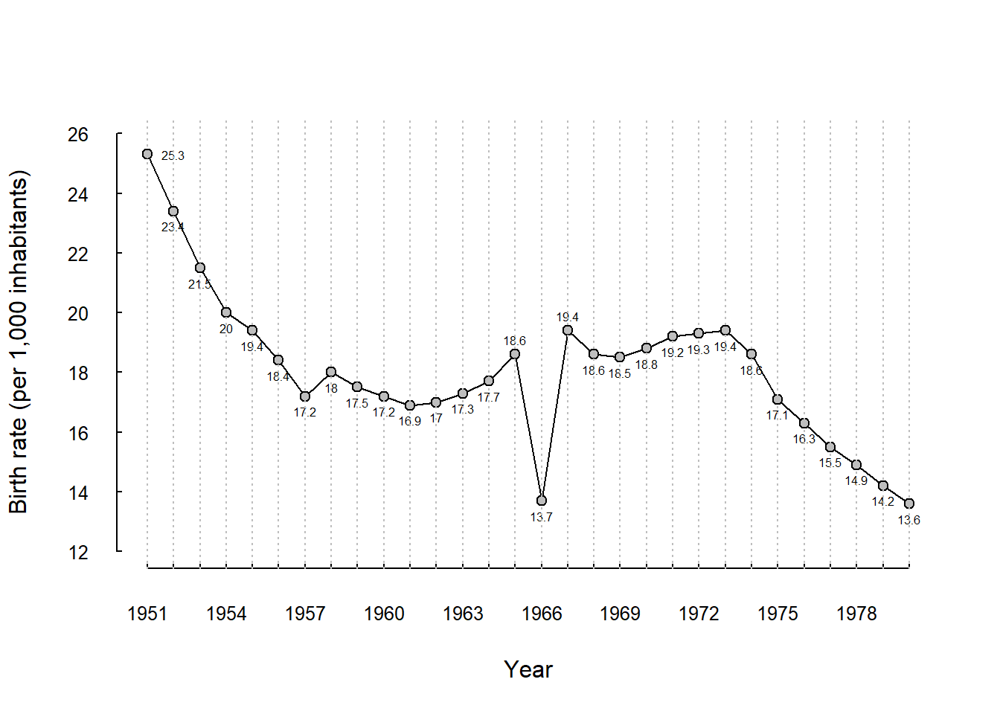

Code
library(dagitty) # R implementation of http://www.dagitty.netLoad R-libraries
library(dagitty) # R implementation of http://www.dagitty.netTheoretical articles to read:
Here is a tentative definition of causality to get us started:
X causes Y if a change in X would lead to a change in Y for at least one unit of observation.
We may ask different types of causal questions, for example:
Causal inference is the pursuit of answering such questions. We will primarily focus on the 3. Estimation of causal effect(s). In this context, causal inference involves estimating the extent to which an outcome variable (Y) would change in response to a given change in the exposure variable (X). Note that question 3 encompasses question 2 as a special case. If the estimated effect differs from zero, the answer to question 2 is “yes”; otherwise, it is “no.”
To justify the claim that an observed association between X and Y is a good estimate of the causal effect of X on Y requires a lot more than just reporting the association. There are typically plenty of alternative non-causal explanations of an association to be dealt with before the causal claim will be considered justified. This is true in particular for observational studies with no experimental manipulation and lack of information on how individuals’ came to be exposed to the causal factors under study. For example, observational studies have found that occupational noise exposure is associated with increased risk for heart disease. But maybe part or all of this is explained by other factors that may differ between people working in noisy environments compared to quiet environments. Even if we have tried to adjust for differences in some of these, such as education and income, there may always be unmeasured factors that we have no control over.
Sometimes researches prefer to play it safe and avoid the term cause or causality in favor of terms like associated, linked or predicts. And sometimes they forget themselves and use causal terms anyhow, like influence, change, increase, amplify, reduce, decrease, affect, effect, moderate, and so on. It is very hard to write an article on a causal research question without using any causal terms.
Hernán (2018) argues well for why we should say it if we mean it. In doing so, he cites Kenneth Rothman, who said it 40 years ago:
Some scientists are reluctant to speak so blatantly about cause and effect, but in statements of hypothesis and in describing study objectives such boldness serves to keep the real goal firmly in focus and is therefore highly preferable to insipid statements about ‘association’ instead of ‘causation’.
Rothman, cited in Hernán (2018)
“Causality” is a tricky concept; we all know what it is, but no one really can define it. The Potential Outcome Model of causality (PO) simply avoids defining causality, and instead defines “causal effect”:
Ceteris Paribus: “All other things being equal”
Warning: Terminology and notation in the potential outcome business vary a lot. I try to stick to the notation used by Gelman et al. (2021) (Ch. 18).
It’s important to note that the fundamental problem of causality doesn’t mean that causal inference is always difficult. In fact, sometimes it’s easy! For example, consider a situation where we are uncertain about the causal effect of a specific light switch in a hotel room. We turn the switch on (treatment) and observe that the bathroom light turns on. To confirm, we turn the switch off (control) and observe that the bathroom light turns off. This straightforward process is usually enough to convince us, beyond reasonable doubt, that the light switch has a causal effect on the bathroom light. We might refer to this as the “light-switch design,” but the more established term is the “Single-N design,” which will be discussed in upcoming seminars.
Another approach involves using identical copies of an object, exposing one to the treatment and the other to the control, and then comparing the outcomes. For instance, you could cut an iron bar into two pieces, place one piece in ordinary water and the other in salty water, and then compare the amount of rust on each piece. The difference in rust can be used to estimate the causal effect of exposure to salty versus non-salty water. We might call this the “identical twin design.”
Holland (1986) referred to both of these strategies as “scientific” approaches to causal inference, in contrast to the “statistical” approach, which involves comparing groups of individuals who have received different treatments (as in a randomized experiment). A key drawback of the statistical approach is that it can only provide estimates of average causal effects across a population, rather than estimates of single-unit causal effects—unless one assumes that there is no variation in individual responses to the treatment.
A Directed Acyclical Graphs (DAG) is a tool to help us think clearly about causal and non-causal relationships between variables of relevance to a specific causal research problem.
vvg_dag <- dagitty( "dag {
VVG -> AGG
VVG -> PA -> AGG
PA -> BMI
VVG <- Support -> SProb -> AGG
SProb <- Genetic -> AGG
}")
coordinates(vvg_dag) <- list(
x = c(VVG = 1, Support = 1, BMI = 2, PA = 3, SProb = 3, Genetic = 4, AGG = 4),
y = c(VVG = 5, Support = 1, BMI = 3, PA = 4, SProb = 2, Genetic = 1, AGG = 5))
plot(vvg_dag)DAGS are graphs that consist of nodes, representing variables, and arrows representing causal effects.
The simple DAG above show my model of how these variables are causally related:
Longitudinal study: Exposure and covariates measured in childhood, outcome in adulthood.
Please draw the DAG above using the online tool at dagitty.net
Jumping ahead: The DAG is a mathematical object (a graph) that we may ask questions about, e.g., using dagitty. Here I use the function dagitty::adjustmentSets() to find small sets of variables that I need to conditioning on to estimate the total causal effect of the exposure, VVG, on the outcome AGG.
# Get minimal sufficient adjustment sets
adjustmentSets(vvg_dag, exposure = 'VVG', outcome = 'AGG',
type = "minimal", effect = "total"){ Genetic, SProb }
{ Support }In the DAG above, the total causal effect of VVG on AGG is the combined effect of the direct causal effect \(VVG \rightarrow AGG\) and the indirect causal effect \(VVG \rightarrow PA \rightarrow AGG\).
If we assume linear causal relationships with \(a\), \(b\), and \(c\) as regression coefficients, that is, change in outcome (on average) for one unit change of the causal factor:
then he causal effects would be:
Here is a simple simulation with three variables, \(X, M, Y\), and coefficients \(a, b, c\):
direct causal effect (\(X \rightarrow Y\)): \(c = -0.5\).
indirect causal effect (\(X \rightarrow M \rightarrow Y\)): \(a \times b = 0.5 \times 0.6 = 0.3\).
total causal effect: \(c + a \times b = -0.5 + 0.3 = -0.2\). That is, increasing \(X\) with one unit will decrease \(Y\) with 0.2 units.
# Simulate data
set.seed(123)
n <- 1e5
x <- rnorm(n) # Exposure variable
m <- rnorm(n) + 0.5 * x # Mediator variable
y <- rnorm(n) + -0.5 * x + 0.6 * m # Outcome variable
# Run a regression analysis, to find total causal effect of X on Y
fit0 <- lm(y ~ x)
# Adding m to the model, to find direct effect of X on y
fit1 <- lm(y ~ x + m)
# Show causal effect estimates : coefficients for x
round(c(total = coef(fit0)[2], direct = coef(fit1)[2]), 2) total.x direct.x
-0.2 -0.5 One way to categorize cause-probing research designs is by their relative strength in terms of internal validity. The strongest designs involve a distinct manipulation of the causal factor of interest and fully understood assignment of participants to conditions (assignment is ‘ignorable’). Slightly weaker designs still involve manipulation of the causal factor, but the assignment mechanism may be unclear, potentially introducing bias. The weakest designs neither manipulate the causal factor distinctly nor employ a known or controlled assignment mechanism.
The list below ranks designs from strongest to weakest, though this ranking is tentative. A well-executed study with a lower-ranked design may yield more reliable results than a poorly executed study with a higher-ranked design.
(Designs in parentheses are not covered in this course.)
The practice problems are labeled Easy (E), Medium (M), and Hard (H), as in McElreath (2020).
3E1. I overheard this conversation:
Holland: The fundamental problem is that you can never measure both. You’ll always have missing data.
Bellman: Nonsense, you just measure twice, once with and once without treatment.
Heraclitus: You could not step twice into the same river.
What was this all about?
Footnote: This is an old exam question. Holland as in Holland (1986)
3E2. “With increasing traffic volumes, exposure to residential road-traffic noise has increased substantially over the last decades. In the same period, we have seen a remarkable reduction in the the number of heart attacks. Thus, road-traffic noise cannot cause heart attacks, as some noise researchers seem to suggest.”
What is wrong with this argument? Explain in terms of the Potential outcome model of causality.
3E3. “Every 60 years, two cycles within the Asian zodiac calender - one over twelve months and over over five elements - generate a year of the ‘fire horse’. A folk belief exists that families who give birth to babies designated as fire horses will suffer untold miseries, particularly so if the baby is a girl” (Morgan & Winship (2015), p. 65).
The figure below is adopted from Morgan & Winship’s Fig. 2.1.
Guess what year was a “fire horse”! (answer: 1966)
Make a reasonable estimate of the causal effect of the folk belief on the birth rate in year 1966. Define causal effect, ce, as
\(ce_i = y_i^1 - y_i^0\),
where \(y_i^1\) is the observed birth rate in year \(i=1966\) and \(y_i^0\) is the counterfactual birth rate in year 1966 had this year not been a fire horse.
# Data
year <- 1951:1980
birth_rate <- c(25.3, 23.4, 21.5, 20.0, 19.4, 18.4, 17.2, 18.0, 17.5, 17.2,
16.9, 17.0, 17.3, 17.7, 18.6, 13.7, 19.4, 18.6, 18.5, 18.8,
19.2, 19.3, 19.4, 18.6, 17.1, 16.3, 15.5, 14.9, 14.2, 13.6)
# Plot
plot(year, birth_rate, pch = '', ylim = c(12, 26), xlab = 'Year',
ylab = 'Birth rate (per 1,000 inhabitants)', las = 1, axes = FALSE )
axis(1, at = year, las = 1, tck = 0.01, cex.axis = 0.8)
axis(2, at = seq(12, 26, by = 2), las = 1, tck = 0.01, cex.axis = 0.8)
lines(year, birth_rate)
points(year, birth_rate, pch = 21, bg = 'grey')
# Prepare adding birth-rate number below data symbols in plot
ytext <- birth_rate - 0.5
# Special treatment of data points 1, 15 and 17 (to avoid numbers on line)
ytext[c(1, 15, 17)] <- c(birth_rate[1], birth_rate[15] + 0.5, birth_rate[17] + 0.5)
xtext <- year
xtext[1] <- 1952
# Add birth_rate numbers
text(xtext, ytext, birth_rate, cex = 0.5)
# Add gridlines
abline(v = year, col = "gray", lty = 3)
3E4. he effect estimated in 3E3. Would you call it an average causal effect or a single-unit causal effect. Motivate.
3E5. Draw Directed Acyclic Graphs (DAGs) involving three variables: X (exposure), Y (outcome), and Z (a third variable), to represent the following scenarios:
3E6. In the DAG below, X is the exposure variable and Y is the outcome variable.
e5dag <- dagitty( "dag {
X -> Y
X -> Z1 -> Y
X <- Z2 -> Z3 -> Y
Z2 -> Z3 -> Y
Z3 <- Z4 -> Y
}")
coordinates(e5dag) <- list(
x = c(X = 1, Z2 = 1, Z1 = 3, Z3 = 3, Z4 = 4, Y = 4),
y = c(X = 5, Z2 = 1, Z1 = 4, Z3 = 2, Z4 = 1, Y = 5))
plot(e5dag)3M1. Go back to the DAG in 3E6:
3M2.
3M3. Are you better off than you were four years ago? This question became famous during the 1980 U.S. presidential campaign. It was used by Ronald Reagan during a debate against the incumbent president, Jimmy Carter. Now, Vice-president Kamala Harris faces the same question from former president Donald Trump and Harris seems to struggle finding a convincing response. How would you have answered? Apply your understanding of the potential outcome model of causality!
3H1.
Think of a simple scenario with one direct and one indirect causal effect of exposure X on outcome Y (see DAG below).
h1dag <- dagitty( "dag {
X -> Y
X -> M -> Y
}")
coordinates(h1dag) <- list(
x = c(X = 1, M = 2, Y = 3),
y = c(X = 1, M = 0, Y = 1))
plot(h1dag)3H2. Construct Directed Acyclic Graphs (DAGs) of the following scenarios.
3H3.
Simulate a data set with observations from 100 individuals on three variables X, Y, and Z that is consistent with this DAG: \(X \leftarrow Z \rightarrow Y\)
Use statistical analyses to check the degree of association between X and Y,
… and between X and Y after controlling for Z.
sessionInfo()R version 4.4.2 (2024-10-31 ucrt)
Platform: x86_64-w64-mingw32/x64
Running under: Windows 11 x64 (build 26100)
Matrix products: default
locale:
[1] LC_COLLATE=Swedish_Sweden.utf8 LC_CTYPE=Swedish_Sweden.utf8
[3] LC_MONETARY=Swedish_Sweden.utf8 LC_NUMERIC=C
[5] LC_TIME=Swedish_Sweden.utf8
time zone: Europe/Stockholm
tzcode source: internal
attached base packages:
[1] stats graphics grDevices utils datasets methods base
other attached packages:
[1] dagitty_0.3-4
loaded via a namespace (and not attached):
[1] digest_0.6.37 fastmap_1.2.0 xfun_0.52 knitr_1.50
[5] htmltools_0.5.8.1 rmarkdown_2.29 cli_3.6.5 compiler_4.4.2
[9] boot_1.3-31 rstudioapi_0.17.1 tools_4.4.2 curl_6.4.0
[13] evaluate_1.0.3 Rcpp_1.0.14 yaml_2.3.10 rlang_1.1.6
[17] jsonlite_2.0.0 V8_6.0.4 htmlwidgets_1.6.4 MASS_7.3-61